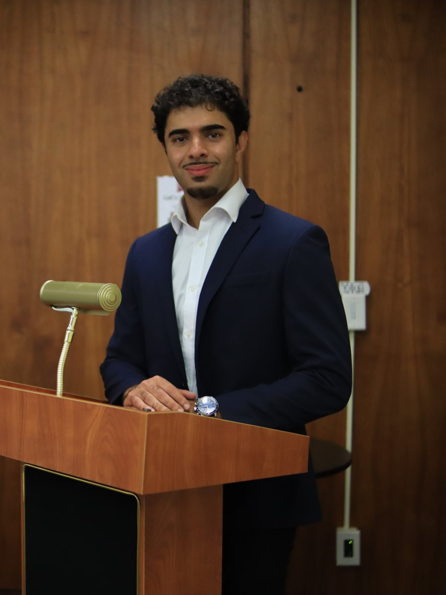

Senior mechanical engineering student at NMSU, looking to pursue a career in the energy industry, working across machine design, controls, structural analysis, and field construction.
Seeking a full-time role — energy systems, process optimization & safetyI'm a mechanical engineer from El Paso, Texas, with a strong passion for the energy industry, drawn to the operations side, where analysis meets the real world and rarely behaves exactly like the model predicted. I'm at my best closing that gap: taking a design out of controlled conditions and making it work in the field.
That instinct started young. I grew up building and fixing things, and I never really stopped; right now, that's building out my Tacoma for overland trips, chasing good fishing spots, and getting outside whenever I could. Two years coaching wrestling taught me as much about persistence and people as any course has, and you can't do it alone.
I speak fluent Arabic, and I care about doing a job right the first time. Five to ten years out, I see myself with an MBA and moving into higher-level management, building the kind of symbiotic relationship where I help the company grow the same way it grows me, into a better engineer and a better person.
Open to full-time roles in energy systems, process optimization, and safety. Email is fastest.